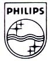
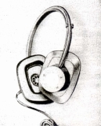
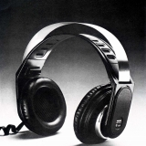
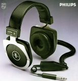

PHILIPS（フィリップス）
オランダに本拠を置く総合エレクトロニクスメーカー。コンパクトカセット、レーザーディスク、コンパクトディスクなどの開発、提唱元として知られる。ヘッドフォンに関した功績では、バリウムフェライト
ヘッドフォンについては、最近ではCPの高い機種が発売されているが、1970年代初頭に輸入されていた形跡がある他、1970年代末にはダイナミック型、コンデンサー型、各1機種が輸入されていた。1970年代末の代理店は日本フィリップス、その後ははフィリップス家電。
�T.1970年代初頭のモデル
1972年の雑誌記事にLBB-9900というモデルが紹介されていた。詳細は不明だが当時のヨーロッパ製のモニター機種にあったタイプ（例 ＭＢのMB
K66、ウーヘルのW671a など）のようだ。

(LBB-9900)
�U.1970年代末のモデル
ダイナミック型N6330はAKGのK240のようなパッシブの振動板を持つモデル、コンデンサー型N6325はコードの中間に小型の昇圧トランスを備えた標準プラグのエレクトレット・コンデンサー型のモデルだった。
（コンデンサー型）N6325
 